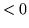
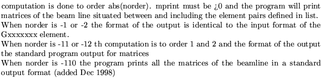
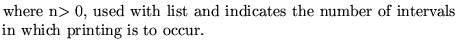
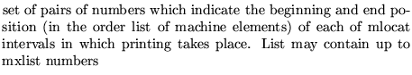

Input FormatParameter definitions
MATRix computations...........(up to 80 char)
norder mprint [list]
norder
1
2
 
mprint
-2 
-1 
0
n 
list 
Examples
All three examples come from demo1.
maTRIX COMPUTATION AT END OF CELL: FIRST ORDER COMPUTATION 2 1 4 4, matrix in input format -2 1 1 4, MATRIX COMPUTATION AFTER FIT : SECOND ORDER COMPUTATION. 2 -1;